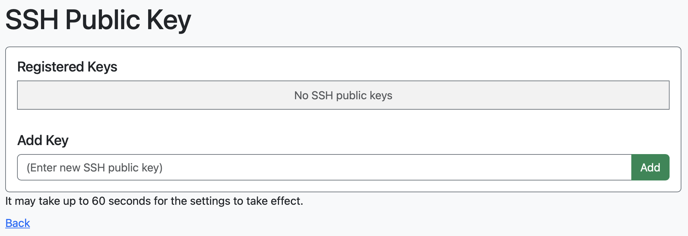

1. はじめに
R-CCSクラウドを利用するには、「WebブラウザからOpen OnDemandを利用する方法」と「ターミナルソフトウェアからログインノードにSSH接続する方法」があります。
1.1. Open OnDemandの利用
https://ondemand.cloud.r-ccs.riken.jpからログインください。Open OnDemandは、Webブラウザからスーパーコンピュータを利用できるWebポータルです。下記の機能を提供しています。
- ファイルの送受信・編集
- ターミナルの利用
- 対話アプリケーション（リモートデスクトップなど）の実行と管理
- バッチジョブの実行と管理
Open OnDemandは、Google Chrome、Mozilla Firefox、Microsoft Edgeなどの主要なWebブラウザに対応しています（注：Internet Explorer 11は対応していません）。中でもChromeは、リモートデスクトップなどにおいて、文字列のコピー & ペースト機能をネイティブにサポートしていますので、Chromeのご利用をお勧めします。
1.2. ターミナルソフトウェアの利用
SSHの公開鍵の登録を行うために、https://ondemand.cloud.r-ccs.riken.jpから「SSH Public Key」を起動し、「Add Key」の入力欄にご自身の公開鍵を入力してください。

次にターミナルソフトでssh xxx@login.cloud.r-ccs.riken.jpと入力ください。xxxはユーザ名です。